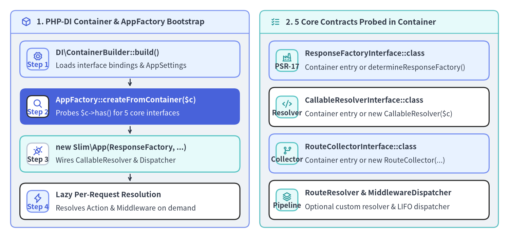
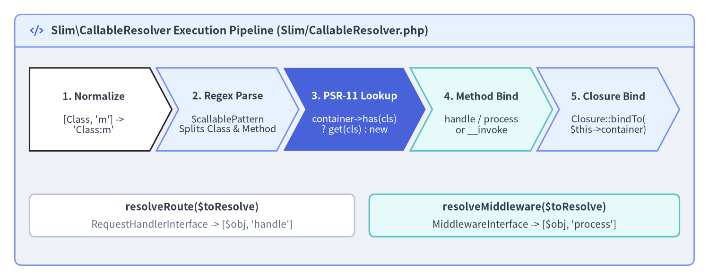

PSR-11 DI & Callable Resolution
Slim 4 (v4.15.3) does not bundle a proprietary service locator; instead, it natively accepts any PSR-11 (Psr\Container\ContainerInterface) dependency injection container via AppFactory::createFromContainer($container). When paired with an auto-wiring container such as PHP-DI (php-di/php-di), Slim\CallableResolver and Slim\MiddlewareDispatcher::addDeferred() lazily instantiate your Single-Action Controllers, PSR-15 middlewares, and domain repositories only when a matching HTTP request actually reaches them.

Source Code
from drawlib.canvas import save, setup
from drawlib.icons import phosphor
from drawlib.smartarts import CardList, Panel
from drawlib.styles import Colors, Styles
setup(width=192, height=90, dpi=150)
p_left = Panel(
"1. PHP-DI Container & AppFactory Bootstrap",
style=Styles.Neutral.patch(shape_r=2.0),
header_style=Styles.PrimaryNeutral.patch(shape_line_width=1.2),
text_style=Styles.DarkBold.patch(text_size=11.0),
icon=phosphor.cube,
icon_style=Styles.PrimaryBold,
header_variant="filled",
header_height=8.5,
)
p_left.draw((4.0, 4.0), width=90.0, height=82.0)
lx, lw, lh = p_left.get_content_box((4.0, 4.0), width=90.0, height=82.0, padding=(3.5, 3.0))
cl_left = CardList(
style=Styles.White,
text_style=Styles.DarkBold.patch(text_size=10.5),
description_style=Styles.Dark.patch(text_size=10.0),
badge_shape="rounded_rect",
badge_style=Styles.PrimaryNeutral,
badge_text_style=Styles.PrimaryBold.patch(text_size=10.0),
icon_style=Styles.PrimaryBold,
direction="vertical",
spacing=2.8,
show_arrows=True,
arrow_style=Styles.DarkBold.patch(line_arrow_head_scale=10, line_width=1.4),
)
cl_left.add(
"DI\\ContainerBuilder::build()",
"Loads interface bindings & AppSettings",
badge_text="Step 1",
icon=phosphor.gear,
style=Styles.PrimaryNeutral,
)
cl_left.add(
"AppFactory::createFromContainer($c)",
"Probes $c->has() for 5 core interfaces",
badge_text="Step 2",
icon=phosphor.magnifying_glass,
style=Styles.PrimaryFlat,
text_style=Styles.WhiteBold.patch(text_size=10.5),
description_style=Styles.White.patch(text_size=10.0),
badge_style=Styles.White,
badge_text_style=Styles.PrimaryBold.patch(text_size=10.0),
icon_style=Styles.PrimaryBold,
)
cl_left.add(
"new Slim\\App(ResponseFactory, ...)",
"Wires CallableResolver & Dispatcher",
badge_text="Step 3",
icon=phosphor.plugs_connected,
style=Styles.SecondaryNeutral,
badge_style=Styles.White.patch(shape_line_color=Colors.Gray4),
badge_text_style=Styles.DarkBold.patch(text_size=10.0),
)
cl_left.add(
"Lazy Per-Request Resolution",
"Resolves Action & Middleware on demand",
badge_text="Step 4",
icon=phosphor.lightning,
)
cl_left.draw(xy=lx, width=lw, height=lh)
p_right = Panel(
"2. 5 Core Contracts Probed in Container",
style=Styles.Neutral.patch(shape_r=2.0),
header_style=Styles.SecondaryNeutral.patch(shape_line_width=1.2),
text_style=Styles.DarkBold.patch(text_size=11.0),
icon=phosphor.list_checks,
icon_style=Styles.SecondaryBold,
header_variant="filled",
header_height=8.5,
)
p_right.draw((98.0, 4.0), width=90.0, height=82.0)
rx, rw, rh = p_right.get_content_box((98.0, 4.0), width=90.0, height=82.0, padding=(3.5, 3.0))
cl_right = CardList(
style=Styles.White,
text_style=Styles.DarkBold.patch(text_size=10.5),
description_style=Styles.Dark.patch(text_size=10.0),
badge_shape="rounded_rect",
badge_style=Styles.SecondaryNeutral,
badge_text_style=Styles.DarkBold.patch(text_size=10.0),
icon_style=Styles.SecondaryBold,
direction="vertical",
spacing=2.8,
)
cl_right.add(
"ResponseFactoryInterface::class",
"Container entry or determineResponseFactory()",
badge_text="PSR-17",
icon=phosphor.factory,
style=Styles.PrimaryNeutral,
)
cl_right.add(
"CallableResolverInterface::class",
"Container entry or new CallableResolver($c)",
badge_text="Resolver",
icon=phosphor.code,
)
cl_right.add(
"RouteCollectorInterface::class",
"Container entry or new RouteCollector(...)",
badge_text="Collector",
icon=phosphor.git_branch,
style=Styles.PrimaryNeutral,
)
cl_right.add(
"RouteResolver & MiddlewareDispatcher",
"Optional custom resolver & LIFO dispatcher",
badge_text="Pipeline",
icon=phosphor.stack,
)
cl_right.draw(xy=rx, width=rw, height=rh)
save()
Bootstrapping Slim 4 with PHP-DI & createFromContainer()
To add reflection-based constructor auto-wiring to Slim 4, install php-di/php-di alongside slim/slim:
composer require php-di/php-di:"^7.0"
When you pass a Psr\Container\ContainerInterface instance to AppFactory::createFromContainer($container) (Slim/Factory/AppFactory.php:77-122), Slim inspects $container->has(...) for five optional framework interfaces and verifies each retrieved entry with instanceof before passing them to new App(...):
Container Interface Key Probed by createFromContainer() |
Source Lines (AppFactory.php) |
Default Fallback When Not Registered in Container |
|---|---|---|
Psr\Http\Message\ResponseFactoryInterface::class |
79–84 |
AppFactory::determineResponseFactory() via Psr17FactoryProvider |
Slim\Interfaces\CallableResolverInterface::class |
86–91 |
new CallableResolver($container) inside App::__construct() |
Slim\Interfaces\RouteCollectorInterface::class |
93–98 |
new RouteCollector($responseFactory, $callableResolver, $container) |
Slim\Interfaces\RouteResolverInterface::class |
100–105 |
new RouteResolver($this->routeCollector) |
Slim\Interfaces\MiddlewareDispatcherInterface::class |
107–112 |
new MiddlewareDispatcher($routeRunner, $this->callableResolver, $container) |
In config/container.php, you only need to define entries that cannot be auto-wired by reflection alone—such as AppSettings, ResponseFactoryInterface, database connections (PDO), and interface-to-implementation bindings (UserRepositoryInterface::class => DI\autowire(PdoUserRepository::class)):
<?php
declare(strict_types=1);
// File: config/container.php
use App\Domain\User\UserRepositoryInterface;
use App\Infrastructure\Persistence\PdoUserRepository;
use App\Support\AppSettings;
use DI\ContainerBuilder;
use PDO;
use Psr\Container\ContainerInterface;
use Psr\Http\Message\ResponseFactoryInterface;
use Slim\App;
use Slim\Factory\AppFactory;
use Slim\Psr7\Factory\ResponseFactory;
use function DI\autowire;
return static function (ContainerBuilder $builder): void {
$builder->addDefinitions([
AppSettings::class => static fn (): AppSettings => AppSettings::fromEnv($_ENV),
ResponseFactoryInterface::class => autowire(ResponseFactory::class),
App::class => static function (ContainerInterface $container): App {
return AppFactory::createFromContainer($container);
},
PDO::class => static function (ContainerInterface $container): PDO {
/** @var AppSettings $settings */
$settings = $container->get(AppSettings::class);
return new PDO($settings->dbDsn, null, null, [
PDO::ATTR_ERRMODE => PDO::ERRMODE_EXCEPTION,
PDO::ATTR_DEFAULT_FETCH_MODE => PDO::FETCH_ASSOC,
]);
},
// Bind Domain Repository interface to concrete PDO implementation
UserRepositoryInterface::class => autowire(PdoUserRepository::class),
]);
};
[!TIP] Production Container Compilation: In production (
$settings->appEnv === 'production'), call$builder->enableCompilation(__DIR__ . '/../var/cache/di')before$builder->build(). PHP-DI compiles all reflection metadata into a single pre-resolved PHP class file so constructor auto-wiring has zero runtime reflection overhead.
How Slim\CallableResolver Resolves Routes & Middlewares
Whenever a route matches or a deferred middleware executes, Slim\CallableResolver (Slim/CallableResolver.php:32-201) translates your route or middleware definition into a standard PHP callable. Implementing AdvancedCallableResolverInterface, it exposes three specialized entry points:
resolveRoute($toResolve): callable: Used byRoute::run(). If the resolved object implementsPsr\Http\Server\RequestHandlerInterface, it defaults the method to'handle'; otherwise it defaults to'__invoke'.resolveMiddleware($toResolve): callable: Used byMiddlewareDispatcher::addDeferred(). If the resolved object implementsPsr\Http\Server\MiddlewareInterface, it defaults the method to'process'; otherwise it defaults to'__invoke'.resolve($toResolve): callable: General-purpose resolver used byErrorMiddlewareand custom strategies.

Source Code
from drawlib.canvas import save, setup
from drawlib.icons import phosphor
from drawlib.shapes import rectangle
from drawlib.smartarts import ChevronProcess, Panel
from drawlib.styles import Colors, Styles
from drawlib.text import text
setup(width=192, height=76, dpi=150)
outer = Panel(
"Slim\\CallableResolver Execution Pipeline (Slim/CallableResolver.php)",
style=Styles.Neutral.patch(shape_r=2.0),
header_style=Styles.PrimaryNeutral.patch(shape_line_width=1.2),
text_style=Styles.DarkBold.patch(text_size=11.2),
icon=phosphor.code,
icon_style=Styles.PrimaryBold,
header_variant="filled",
header_height=8.8,
)
outer.draw((4.0, 4.0), width=184.0, height=68.0)
proc = ChevronProcess(
style=Styles.White,
text_style=Styles.DarkBold.patch(text_size=10.2),
description_style=Styles.Dark.patch(text_size=9.8),
corner_angle=62.0,
spacing=1.8,
flat_left_end=True,
)
proc.add(
"1. Normalize",
description="[Class, 'm'] ->\n'Class:m'",
style=Styles.White,
)
proc.add(
"2. Regex Parse",
description="$callablePattern\nSplits Class & Method",
style=Styles.PrimaryNeutral,
)
proc.add(
"3. PSR-11 Lookup",
description="container->has(cls)\n? get(cls) : new",
style=Styles.PrimaryFlat,
text_style=Styles.WhiteBold.patch(text_size=10.2),
description_style=Styles.White.patch(text_size=9.8),
)
proc.add(
"4. Method Bind",
description="handle / process\nor __invoke",
style=Styles.SecondaryNeutral,
)
proc.add(
"5. Closure Bind",
description="Closure::bindTo(\n$this->container)",
style=Styles.PrimaryNeutral,
)
proc.draw(xy=(8.0, 35.0), width=176.0, height=22.5)
rectangle((52.0, 17.5), width=88.0, height=11.5, style=Styles.White.patch(shape_r=1.5, shape_line_color=Colors.Gray4))
text((52.0, 19.8), "resolveRoute($toResolve)", style=Styles.DarkBold.patch(text_size=10.5))
text((52.0, 15.0), "RequestHandlerInterface -> [$obj, 'handle']", style=Styles.Muted.patch(text_size=10.0))
rectangle((142.0, 17.5), width=84.0, height=11.5, style=Styles.SecondaryNeutral.patch(shape_r=1.5))
text((142.0, 19.8), "resolveMiddleware($toResolve)", style=Styles.DarkBold.patch(text_size=10.5))
text((142.0, 15.0), "MiddlewareInterface -> [$obj, 'process']", style=Styles.Dark.patch(text_size=10.0))
save()
The table below summarizes every callable syntax accepted by Slim 4 routes and middlewares:
| Callable Syntax | Example Registration | PSR-11 Lookup Key | Resolved Target Method |
|---|---|---|---|
| Invokable Class String | CreateUserAction::class |
CreateUserAction::class |
[$instance, '__invoke'] |
| PSR-15 RequestHandler String | GetUserAction::class |
GetUserAction::class |
[$instance, 'handle'] (via resolveRoute) |
| PSR-15 Middleware String | JwtAuthMiddleware::class |
JwtAuthMiddleware::class |
[$instance, 'process'] (via resolveMiddleware) |
| Class-Method Array | [UserController::class, 'list'] |
UserController::class |
[$instance, 'list'] |
| Slim Colon Notation | 'App\Controller\UserController:list' |
'App\Controller\UserController' |
[$instance, 'list'] |
Anonymous Closure |
function (Request $req, Response $res) { ... } |
None (Bound via Closure::bindTo($container)) |
$closure with $this bound to $container |
Invokable Classes, Array Callables & Slim Notation
Under the hood, CallableResolver::prepareToResolve() (Slim/CallableResolver.php:187-199) first inspects two-element arrays ([ClassName::class, 'method']) and converts them into Slim's colon notation ('ClassName:method'). Next, resolveSlimNotation() matches the string against CallableResolver::$callablePattern:
!^([^\:]+)\:([a-zA-Z_\x7f-\xff][a-zA-Z0-9_\x7f-\xff]*)$!
Once $class and $method are extracted:
- If
$this->container && $this->container->has($class)istrue, Slim fetches$instance = $this->container->get($class)(allowing PHP-DI to auto-wire all constructor dependencies). - Otherwise, if
class_exists($class)istrue, Slim falls back tonew $class($this->container). - If the handler is an anonymous
Closure(and not declaredstatic),bindToContainer()calls$callable->bindTo($this->container)so$thisinside the closure refers to the PSR-11 container:
<?php
declare(strict_types=1);
use App\Action\User\CreateUserAction;
use App\Action\User\GetUserAction;
use App\Controller\UserReportController;
use App\Support\AppSettings;
use Psr\Http\Message\ResponseInterface as Response;
use Psr\Http\Message\ServerRequestInterface as Request;
// 1. Invokable Single-Action Controller (__invoke) — Recommended for most routes
$app->post('/api/v1/users', CreateUserAction::class);
// 2. PSR-15 RequestHandlerInterface class (resolved to [$instance, 'handle'])
$app->get('/api/v1/users/{id:[0-9]+}', GetUserAction::class);
// 3. Array callable notation ([ClassName::class, 'method']) — IDE & refactoring friendly
$app->get('/api/v1/users-export', [UserReportController::class, 'exportCsv']);
// 4. Slim colon notation ('Class:method' or 'service_id:method')
$app->post('/api/v1/users-archive', UserReportController::class . ':archiveInactive');
// 5. Non-static Closure — $this is automatically bound to the PSR-11 ContainerInterface
$app->get('/api/v1/env', function (Request $request, Response $response): Response {
/** @var AppSettings $settings */
$settings = $this->get(AppSettings::class);
$response->getBody()->write(json_encode(['env' => $settings->appEnv], JSON_THROW_ON_ERROR));
return $response->withHeader('Content-Type', 'application/json');
});
Deferred Middleware Resolution (MiddlewareDispatcher::addDeferred)
How you register a PSR-15 middleware on $app->add(...), $group->add(...), or $route->add(...) directly impacts memory usage and bootstrap latency (Slim/MiddlewareDispatcher.php:85-104):
- Eager Instantiation (
$app->add(new JwtAuthMiddleware(...))): If you pass an already constructedMiddlewareInterfaceobject (or call$container->get(JwtAuthMiddleware::class)during route registration), PHP must instantiate that middleware and its entire dependency tree (JWKS key caches, PDO connections, Redis clients) on every single HTTP request, even when a public/healthendpoint is called! - Deferred Resolution (
$app->add(JwtAuthMiddleware::class)): When you pass aclass-string,MiddlewareDispatcher::add()delegates toaddDeferred(string $middleware)(Slim/MiddlewareDispatcher.php:144-244). Slim wraps the string inside a tiny anonymousRequestHandlerInterfaceproxy and delays calling$this->callableResolver->resolveMiddleware($this->middleware)until an incoming request actually enters that middleware layer at runtime:
<?php
declare(strict_types=1);
use App\Action\Health\HealthCheckAction;
use App\Action\User\CreateUserAction;
use App\Middleware\AuditLogMiddleware;
use App\Middleware\JwtAuthMiddleware;
use Slim\Routing\RouteCollectorProxy;
// GOOD: Pass class-string so MiddlewareDispatcher::addDeferred() resolves lazily at runtime
$app->add(AuditLogMiddleware::class);
// Public route: JwtAuthMiddleware is NEVER instantiated when /health is requested!
$app->get('/health', HealthCheckAction::class);
// Protected group: JwtAuthMiddleware is only resolved from PHP-DI when /api/v1/* matches
$app->group('/api/v1', function (RouteCollectorProxy $group): void {
$group->post('/users', CreateUserAction::class);
})->add(JwtAuthMiddleware::class);
With modular ADR architecture and PSR-11 container auto-wiring in place, proceed to Chapter 3: FastRoute Patterns, Groups & Caching and Invocation Strategies & RouteContext to master regular-expression routing, route caching, and typed controller invocation strategies. You can also revisit Modular Design & Action Controllers or inspect CallableResolver and MiddlewareDispatcher internals in the Slim 4 API Reference and Slim 4 Internal Architecture.